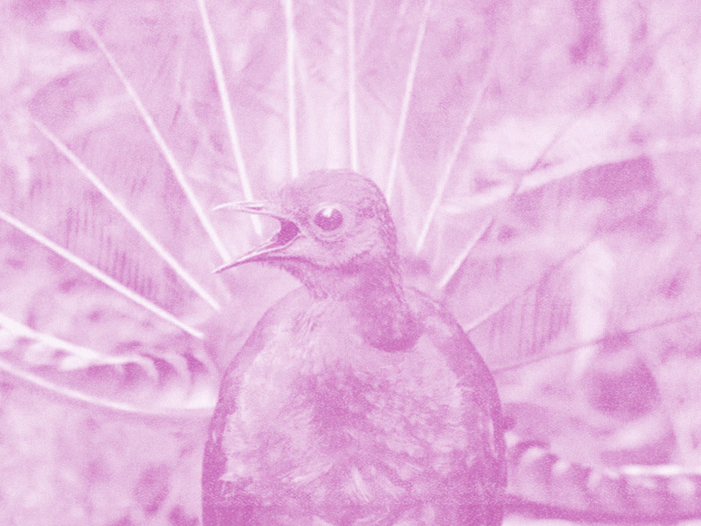
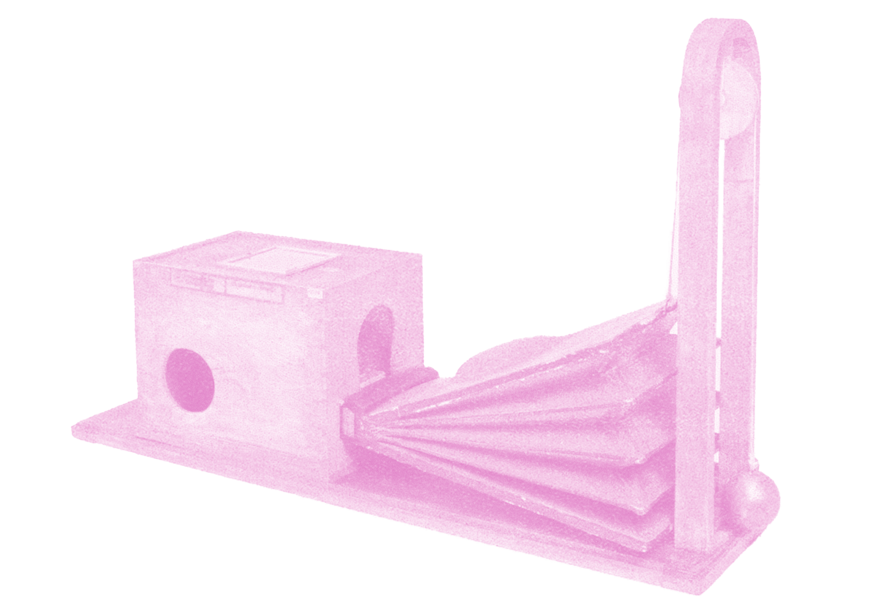
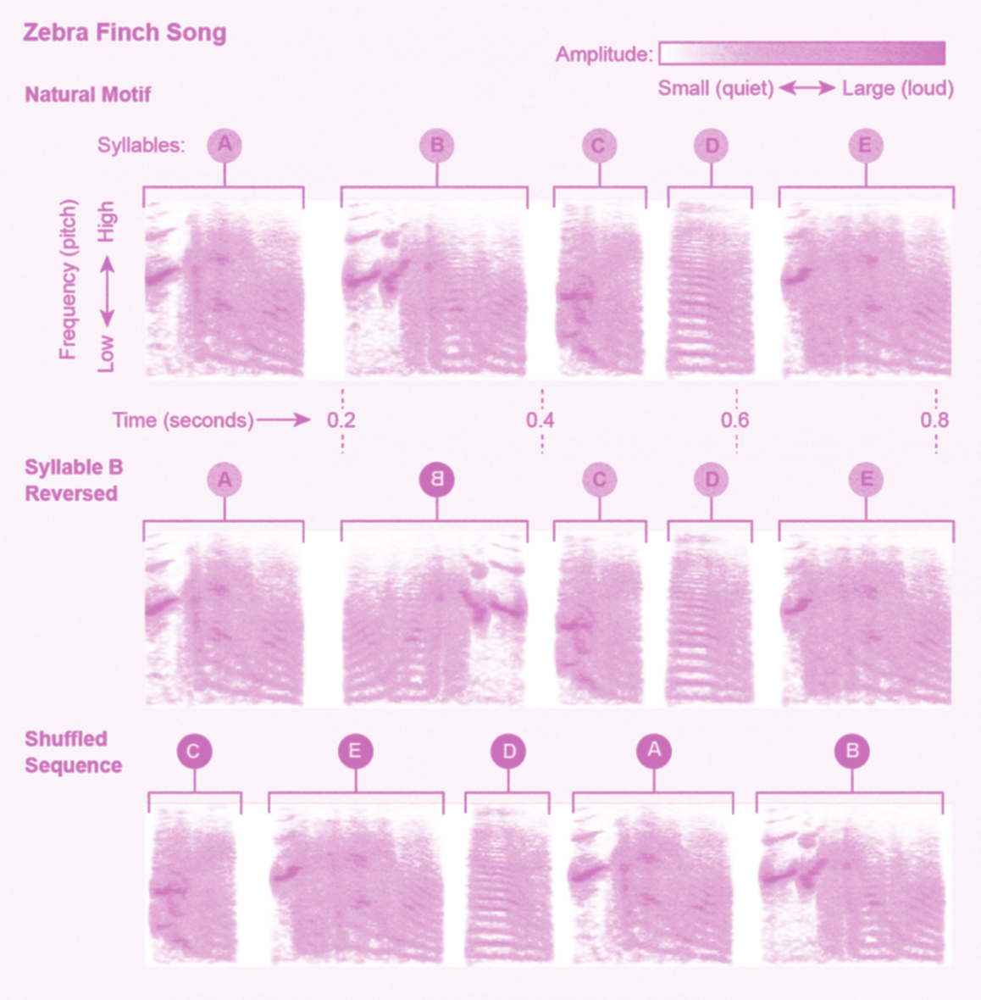

Monash Art and Design
World Wild Web
Making Machines Talk
Xi Xu 2024
“INSIDE”
MAKING MACHINES
TALKING

“OUTSIDE”
1 3D sound system
2 Sound Visualization
3 Ai imitates sound
The science behind making machines talk just like humans is very complex, because our speech patterns are so nuanced.
3D sound system
Chirp, whistle, trill, caw, rattle, drum
Birds make many different sounds. They chirp, whistle,
caw, rattle, drum, and much, much more. Vocally,
they are in a class of their own.
But how do birds make these sounds?

A model replica of Wolfgang von Kempelen's Speaking Machine.
Fabian Brackhane
The voice is not easy to grasp
Klaus Scherer, emeritus professor of the psychology of emotion at the University of Geneva, highlights the complexity of voice analysis. It demands a robust understanding of acoustics, vocal mechanisms, and physiological aspects, making it an interdisciplinary and challenging field. This intricacy explains why it took over two centuries to evolve from Wolfgang von Kempelen's early speaking machine in 1800—a simple device with bellows and rubber parts mimicking basic human sounds—to today's sophisticated synthetic voices, like the Samuel L. Jackson clone on Alexa.
Talking machines like Siri, Google Assistant and Alexa, or a bank's automated customer service line, are now sounding quite human. Thanks to advances in artificial intelligence, or AI, we've reached a point where it's sometimes difficult to distinguish synthetic voices from real ones.
Birds possess the most complex respiratory system among vertebrates, notably more efficient than that of mammals. Their system includes thin-walled air sacs linked to the lungs, which do not participate in gas exchange but function like bellows to ensure a one-way air flow through the lungs from back to front. This unique arrangement allows for a continuous flow of air during both inhalation and exhalation, enabling birds to sing at high volumes for extended periods without interruption.
In birds, the syrinx, or vocal head, is their sound-producing organ, situated lower in the thoracic cavity at the junction of the main bronchi, near the lungs' entrance.
It has four elastic membranes similar to vocal cords, which can be stretched by a singing muscle apparatus. In songbirds, up to nine small pairs of muscles adjust the membranes' tension, allowing for varied song production. Other bird groups may have as few as two pairs of these muscles.
Single bird tones can rapidly modulate, with up to 200 pitch changes per second due to the unique physiology of the syrinx muscles. Interestingly, the two halves of the syrinx can operate independently, enabling birds to produce two-voiced vocalizations. While some birds can sing during both inhalation and exhalation, most, like humans, sing while exhaling.
Sound Visualization

Birds listen to song differently than humans, focusing more on the acoustic details of individual song elements rather than their sequence. While humans are disrupted by changes in sequence in speech or music, birds may not be as sensitive to these changes, instead hearing details beyond human perception. A better analogy for understanding birdsong might be dance. In dance, the sequence is crucial for performers to execute moves correctly, but for spectators, the emphasis is on the acrobatics, rhythm, and variety of movements, rather than the order. Similarly, while the sequence of birdsong may be crucial for the bird producing it, the listening bird prioritizes the song's individual components.
Ai Imitates Sound
Male lyrebirds are known for their complex courtship displays, imitating over 20 different bird species and human-made sounds like car engines and cell phone ringtones, demonstrating their advanced memory and processing capabilities. A 2020 study in "Nature Communications" emphasized their ability to quickly mimic new sounds, adjusting to the frequency and rhythm of their targets. A 2018 study in the "Journal of Experimental Biology" suggested that females prefer males with more diverse mimicries, linking it to higher fitness. Furthermore, research from 2017 in the "Proceedings of the Royal Society B" indicates that lyrebird mimicry, vital for mate attraction, territory defense, and predator deterrence, has evolved over millions of years. These birds continually update their vocal repertoire, making them exceptional in using mimicry for courtship, communication, and survival.